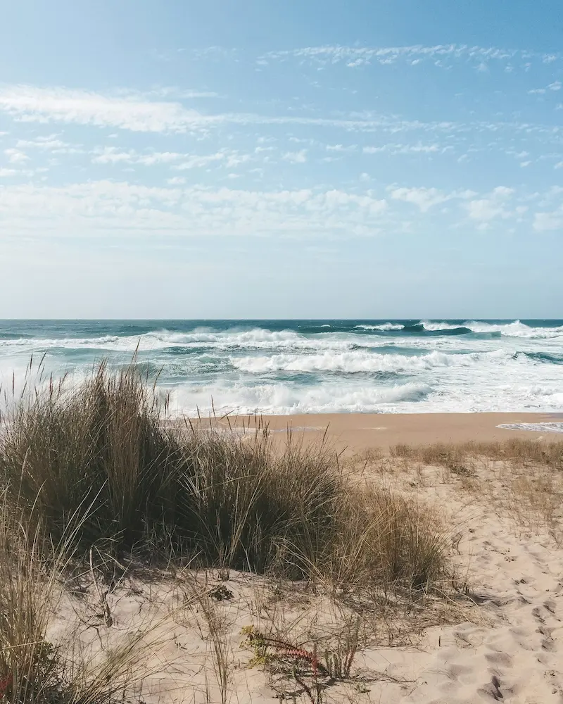
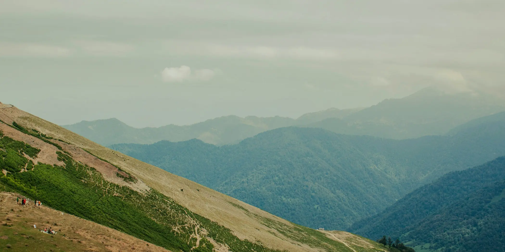
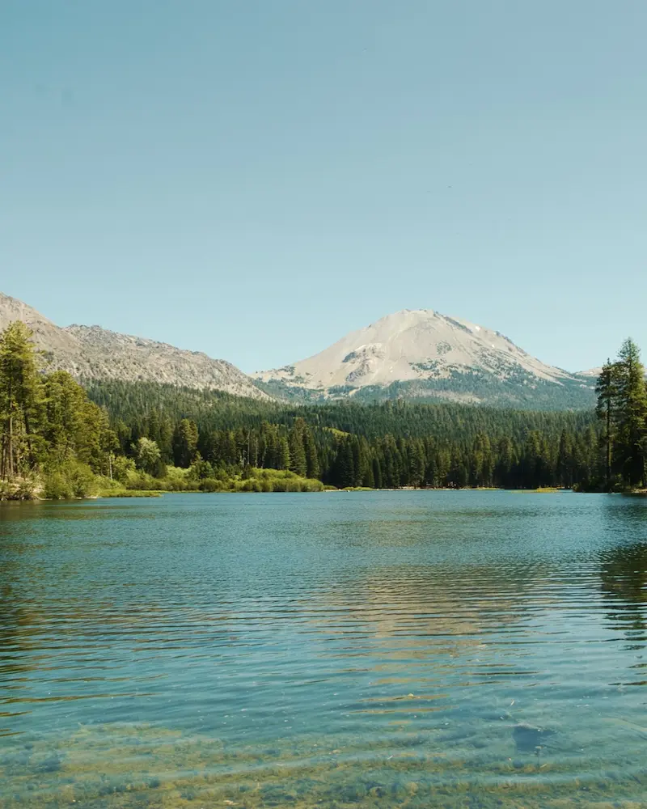
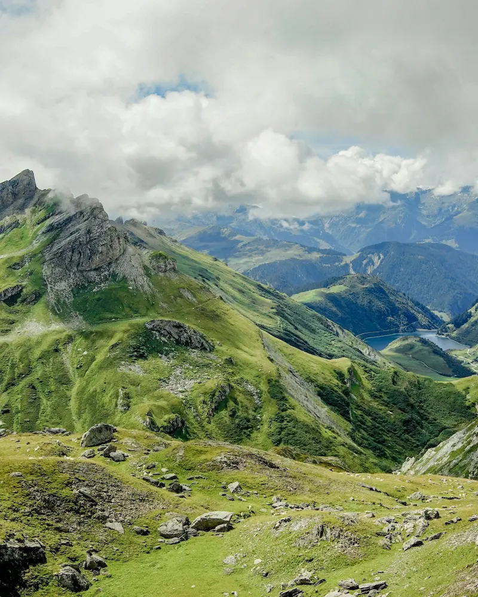
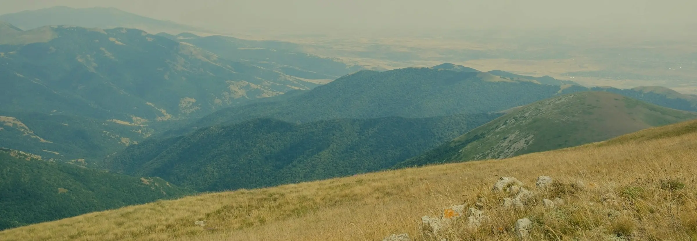

Vores ide
Fire landskaber, halvtreds opskrifter, én simpel tanke:
Maden skal passe til omgivelserne, til rygsækken og til udstyret.
Hvor skal du hen?
Vælg et landskab, og vi viser maden der hører til. Derefter kan du filtrere på ønsket oppakningsvægt og tilberedningstid.



Tre spørgsmål til at,
finde den rigtige ret:
Hvilket udstyr bruger du?
Hvor lang tid vil du bruge?

Hvor meget kan du bære?
Merch plads - til hvis siden bliver lavet

"Mad smager bare bedre ude i naturen."
- Terræn